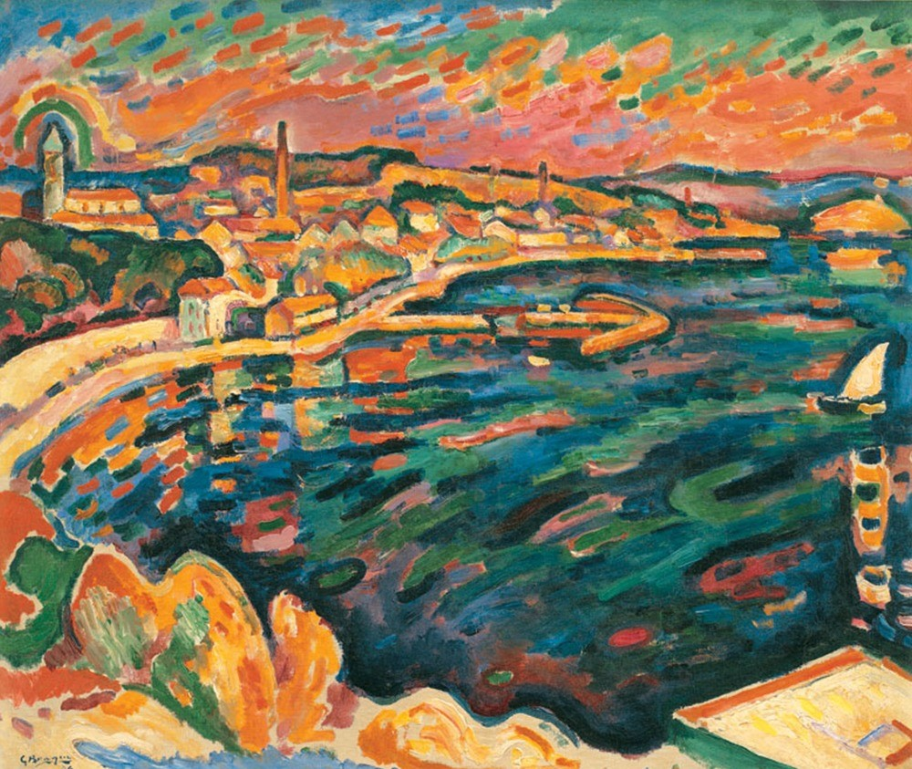
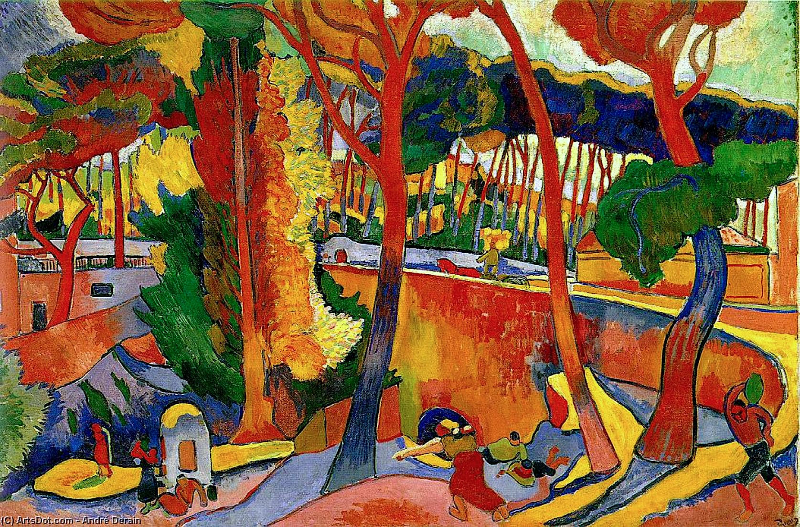
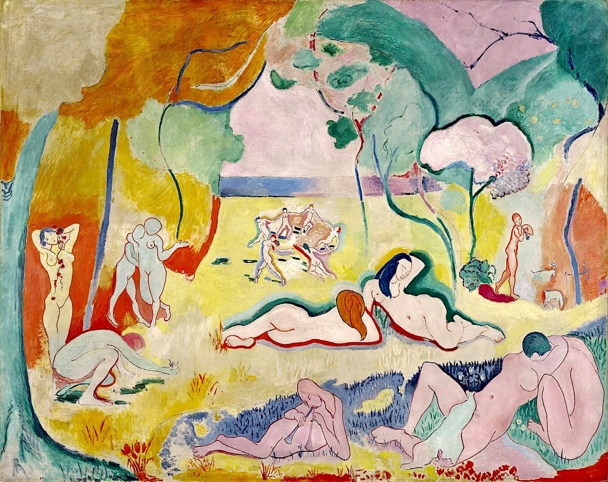
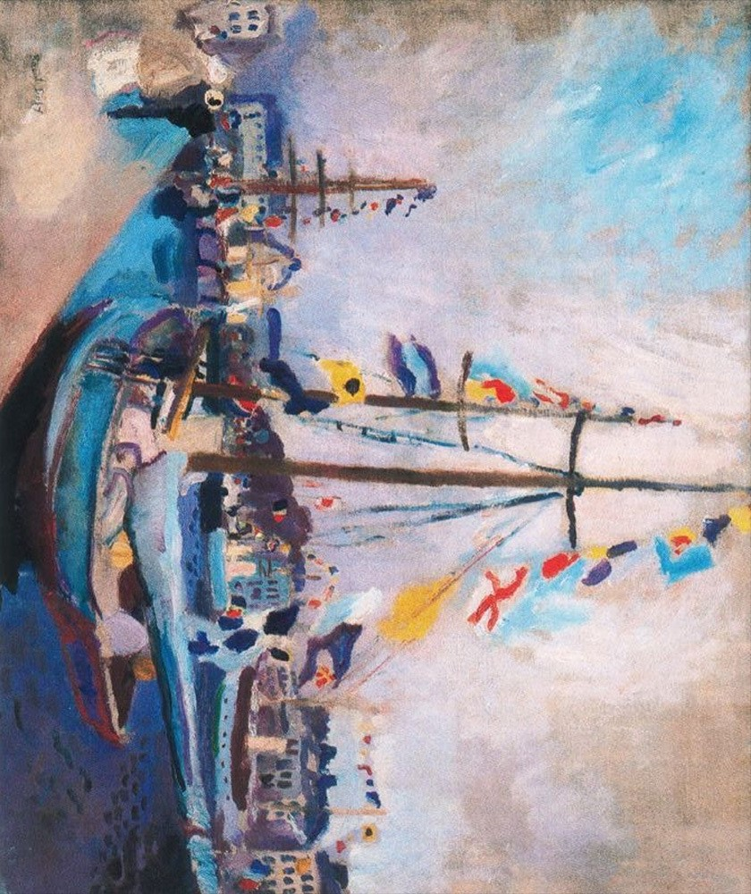

Cofundador del cubismo, pintor y escultor francés conocido por su enfoque innovador en la representación del espacio y la forma.
A Braque lo relacionamos inmediatamente con el cubismo. Sin embargo, antes del cubismo, tiene un período fauvista (de 1905 a 1907), donde nos sorprende por el colorido vibrante de sus obras. Algo que, si bien no debería resultar extraño ya que hablamos de fauvismo, se contrapone a los grises, los ocres y el colorido en general "apagado" que conocemos de su etapa cubista.
Cofundador del movimiento fauvista, pintor francés conocido por su estilo vibrante y expresivo, caracterizado por el uso audaz del color y las formas simplificadas.
Hijo de pastelero, Derain abandonó sus estudios de ingeniería para seguir su pasión por la pintura. A los 15 años, comenzó a pintar y pronto se encontró con Henri Matisse en el Louvre. Derain se destacó por sus paisajes que presentaban colores aún más radicales que los de sus compañeros, lo que lo llevó a convertirse rápidamente en uno de los artistas de vanguardia en el París previo a la Primera Guerra Mundial
El gran artista del siglo XX junto a Picasso. Su revolucionario uso del color encabezó el fauvismo, del que acabaría evolucionando hacia un arte personal e inclasificable.
Matisse se embarcó en el estudio del arte en París, abandonando su carrera de derecho. El encuentro con otros artistas como Derain y Vlaminck lo llevó a sumergirse en un nuevo lenguaje pictórico, basado en el uso libre del color y el rechazo a la mera imitación de la naturaleza. Juntos, expusieron en el Salon d'Automne de 1905, donde fueron etiquetados despectivamente como "fauves" (salvajes), nombre que adoptaron con orgullo.
Pintor francés posimpresionista conocido por su estilo distintivo y colorido, que captura escenas animadas llenas de luz.
Dufy no expuso en el Salon de Oro junto a los fauvistas, pero es allí donde conoce a Matisse. A partir de ese momento, Dufy hace a un lado su estilo (que podríamos decir que era “cercano al impresionismo”), y su pincelada se suelta más y se vuelve provocativa, valiente, intensa, mientras que su paleta de colores se vuelve vibrante.
